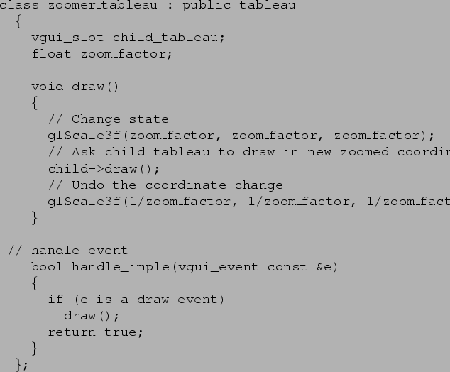

Next: Multiple panes
Up: Tableaux
Previous: Example
To add zooming and panning to the image, we do not need to modify the
image_tableau. We create a new tableau which has the
image_tableau as a child, and modifies the GL state before
passing the draw request event down to the image.

Now we have a zooming image, but the image tableau never needed to know...
The maintainer of the image tableau can concentrate on the thorny issues of
making glDrawPixels fast on Windows machines, overcoming
compiler bugs, and generally writing a high-quality image display routine.
Target Junior User
2000-10-31